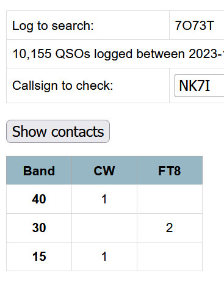

3 slots for me with Dima (7 with 7o8ad/e but still a question
mark until they upload) with only one overlap from the two
stations (and one rerun from previous).
And he's there for a while yet (28 Nov) so who knows! So far,
30M has been the money band for 7o73t (20M not far behind for
7o8ad/e, then 15M); if one wants more than EU in the log (yes, I
said that the way it sounded). Dima is trying evenly to work
everyone.
If I might suggest that with the turmoils of the times and things degrading quickly in the region; some expedience in getting logged is wise. Don't dawdle if you need this entity (I now have the three mode slots but always want all of them on all bands).
6-9 am (Pac time) and 4-8 PM seem to be the better windows, with
the present conditions throwing curve ball and sliders.
GL all,
Rick nk7i
